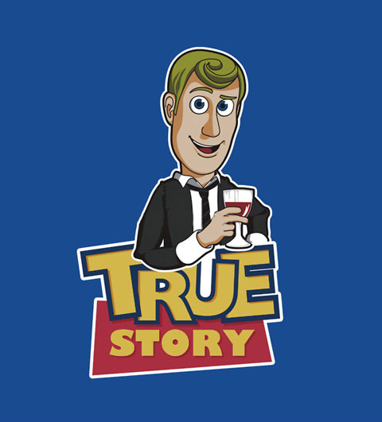
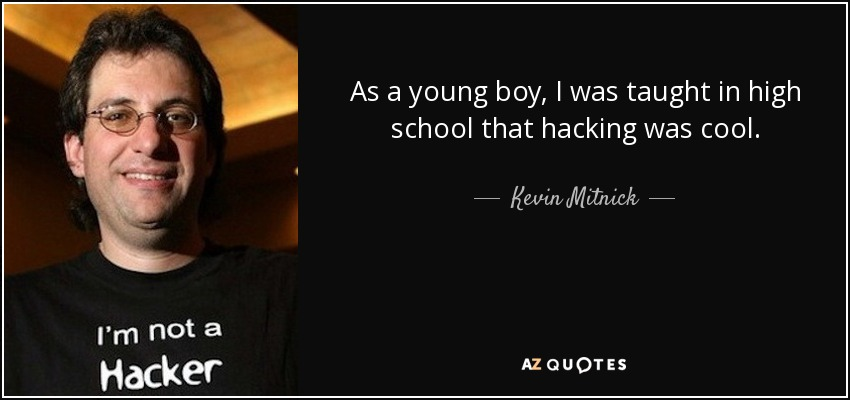
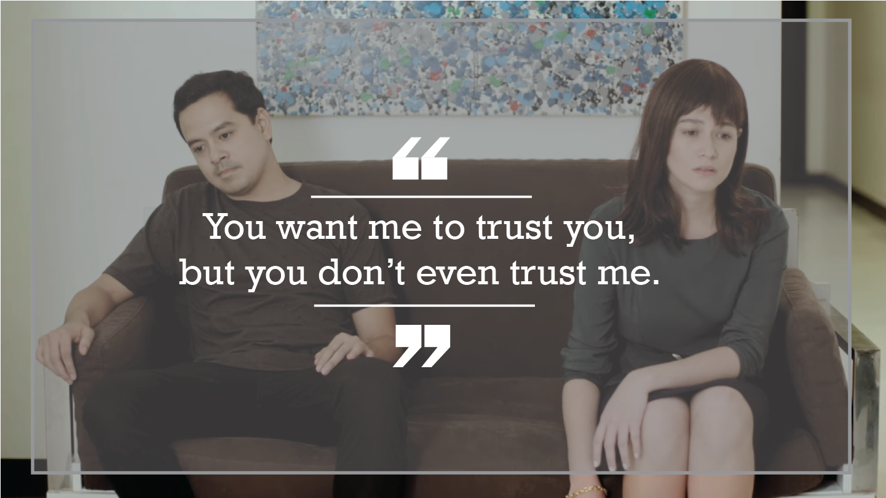

Hackin Ka Nalang?
#SocialEngineering
Presented by: Edwin Richbald A. Salinas
Found at edos4.github.io/hackin-ka-nalang
Fun tip: Press 'o' to see the overview! :)
Social Engineering
Social engineering is the art of manipulating people so they give up confidential information.
Let me tell you a
Kevin Mitnick: From schoolboy hacker to FBI's most wanted
 Press arrow down. ;)In highschool, Mitnick was asked to write a program to find the first 100 Fibonacci numbers as an assignment.
Instead of doing the homework, he created a fake login screen to steal his teacher's password.
When homework was due, he just said, "I got a better one. Isn't your password 'johnco'?".
Mitnick said, "He was really impressed and he shared it with all the class, so that was the ethics that were taught to me as a kid, that it was cool to hack."
At age 13, he used social engineering and asked the bus driver where to buy a ticket punch for "a school project". Then, he did dumpster diving and used unused transfer slips he found in a dumpster next to the bus company garage. After that, he could ride any bus in the greater LA area
As a teenager, he took control of a McDonald's drive-through ordering system just to watch the surprise of the McDonald's employees.
After his first experience writing a computer program, Mitnick says he became "the guy who pushed the envelope"(extends the limits of what is possible), but he never saw himself as malicious. Rather, he believes he was mischievous, hacking into companies not to steal their data, but for the challenge.
However, throughout the 1980s and '90s things got serious and Mitnick became notorious in law enforcement circles.
He penetrated the systems of more than 40 corporations, including Nokia, Sun Microsystems, Digital Equipment Corporation, Motorola, and Netcom.
Even in the closing stages of the legal pursuit, he says he was still having fun. Realising the FBI was onto him he wire tapped the agents on his case, setting up a warning system to alert him when a call was placed to the officers near his office.
In a middle finger to the FBI, Mitnick cleared out his equipment and left a box of donuts waiting for them.
It all came to an end in 1995 when he was arrested on numerous charges including wire fraud and he served five years in prison.
Lesson?
It is fun!

Jewk! :p
Lesson?
"If you build the guts to do something, anything, then you better save enough to face the consequences."
― Criss Jami, KillosophyBut wait, there's more!
So what happened to Kevin Mitnick?
Our Team has a 100% Success Rate!
We maintain a 100 percent successful track record of being able to penetrate the security of any system we are paid to hack into using a combination of technical exploits and social engineering.
Once one of the FBI's Most Wanted because he hacked into 40 major corporations just for the challenge, Kevin is now a trusted security consultant to the Fortune 500 and governments worldwide.
Did he start by doing Matrixy stuff on the computer? No. He understands how the mind (human OS) works. Using that understanding, he can do almost anything.
Now You See Me(Movie)
Now You See Me(Movie)
Now You See Me(Movie)
Then the Horsemen got access to Tressler's bank accountNow You See Me(Movie)
The horsemen just needed the first pet's name and the mother's maiden name(uncle's lastname is mother's maiden name). All they did was craft a conversation in such a way that it was not obvious that they were after those information.
Social Engineering Toolkit
The Social Engineering Framework is a searchable information resource for people wishing to learn more about the psychological, physical and historical aspects of social engineering.
http://www.social-engineer.org/framework/se-tools/computer-based/social-engineer-toolkit-set/
Types of Attacks
Impersonation on help desk calls
Impersonation on help desk calls(prevention)
Phishing
Phishing(prevention)
Shoulder Surfing
Shoulder Surfing(prevention)
Trojan
Trojan(prevention)
Dumpster Diving
Dumpster Diving(prevention)
Crush <3
What if your crush(either John Lloyd or Bea) said:
"hAcKIN ka nalang, but only if you tell me your password."?
When you agree:
When you don't agree:
